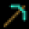

-----------------------------------------------------------------
CSÁKÁNY OFFICIAL WEBOLDAL (nyomj az ikonra)
-----------------------------------------------------------------
A Polybiuss kiadó alapítója. 2016-tól vezéralakja a hazai hiphop képviselésében. Számos formációban letette már a névjegyét. Nyers és megalkuvást nem tűrő szövegei hűen tükrözik a hazai „lakótelepi” életétformát. Dalaiban egytől egyik érződik az underground életérzés. Számtalan klubban és fesztiválon bizonyította már, hogy nem csak profi MC, hanem kiváló előadó is. A Csákány oszlopos tagja, producer, grafikus, stílusteremtő személyiség.
Szerb: "Nagyon sűrűn keresnek fel, de nem adok már mindenkinek alapot és már nem nagyon szoktam eladni. Hogy ha felkeresnek olyanok akiket el ismerek, akkor velük szoktam dolgozni. A részemről van fontossági sorrend, és hogy ha ki tudják várni azt az időt amíg eljutok odáig hogy dolgozzak velük akár alapzenei szinten (akkor ugye ez is egy teszt, ugye türelmesek e) és hogy ha tényleg akarják, és el tudunk odáig jutni, akkor lesz közös munka is"